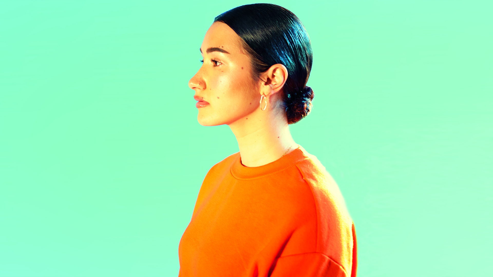

<!DOCTYPE html>
<html lang="eng"></html>
<html>
  <head>
    <meta charset="utf-8" />
    <title>Project 2: Noemi's Music Magazine</title>
    <link rel="stylesheet" href="../code/style.css"/>
    <meta name="viewport" content="width=device-width, initial-scale=1">
    <link rel="preconnect" href="https://fonts.gstatic.com">
    <link href="https://fonts.googleapis.com/css2?family=Abril+Fatface&family=Amiri&display=swap" rel="stylesheet">
  </head>

  <body>
    <div class="header"> <!-- Some kind of logo and navbar -->  
      <h1>Noemi's Music Magazine  </h1>
    </div>
      <nav>
        <ul>
          <div><li><a href="../code/index.html">Home</a></li></div>
          <div><li>Concerts</li></div>
          <div><li>Events</li></div>
          <div><li>About</li></div>
        </ul>
      </nav>
    </header>


<h3>Cleo Sol</h3>
<p class="author">by Noemi, 01.01.2021</p>
<p>20 year old Cleo Sol was born to musical parents who met in a Jazz band. Her Mum, half Serbian and Spanish, is a singer and plays 
the guitar and flute. Cleo’s Jamaican Dad plays the bass and piano. Cleo quickly became the singer in the family, jostling for attention 
amongst seven other siblings, she received a second hand karaoke player from her mum which gave her a platform to display her early 
talents to her musical family.</p>
</body>
</html>